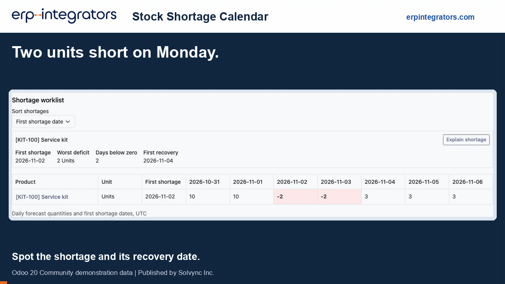

erpintegrators.com | Published by Solvync Inc.
See what changed, assign the supplier follow-up and preview receipt timing before changing the actual receipt.
Odoo 20 Community and Enterprise | Inventory required | Free under LGPL-3

Demo recorded in Odoo 20 Community with demonstration data. The receipt preview leaves the actual receipt unchanged.
A service kit has 10 units on hand and a confirmed delivery of 12. A receipt of 5 is due two days after the shortage starts. Review the two-unit deficit, assign the supplier call and preview an earlier arrival.
Odoo already provides forecasts, movement details and replenishment. This addon adds a dedicated shortage review and follow-up workflow.
| Standard Odoo capability | Added workflow |
|---|---|
| Forecasts and replenishment reports | Daily calendar and resumable warehouse shortage scan |
| Product and movement details | Shortage-day explanation and saved-baseline change tracking |
| General activities and responsible users | Dedicated action owners, due dates, revision history and follow-up queues |
| Actual receipt scheduling | Receipt-timing preview with the original receipt unchanged |
Install the matching Odoo 20 module in your custom addons path, update the Apps list and install Stock Shortage Calendar. Inventory user access is required. Use self-hosted Odoo or a suitable Odoo.sh environment that permits custom Python modules.
Odoo Online cannot install this Python addon. The calendar uses Odoo's native stock forecast. Statistical demand prediction and automatic purchase order creation are outside its scope.
Scanning reads stock data and saves review metadata. Receipt simulation changes the preview only. Actual receipt dates, purchasing and stock transactions remain controlled through normal Odoo operations.
ERP Integrators is a product brand of Solvync Inc. Website: erpintegrators.com.